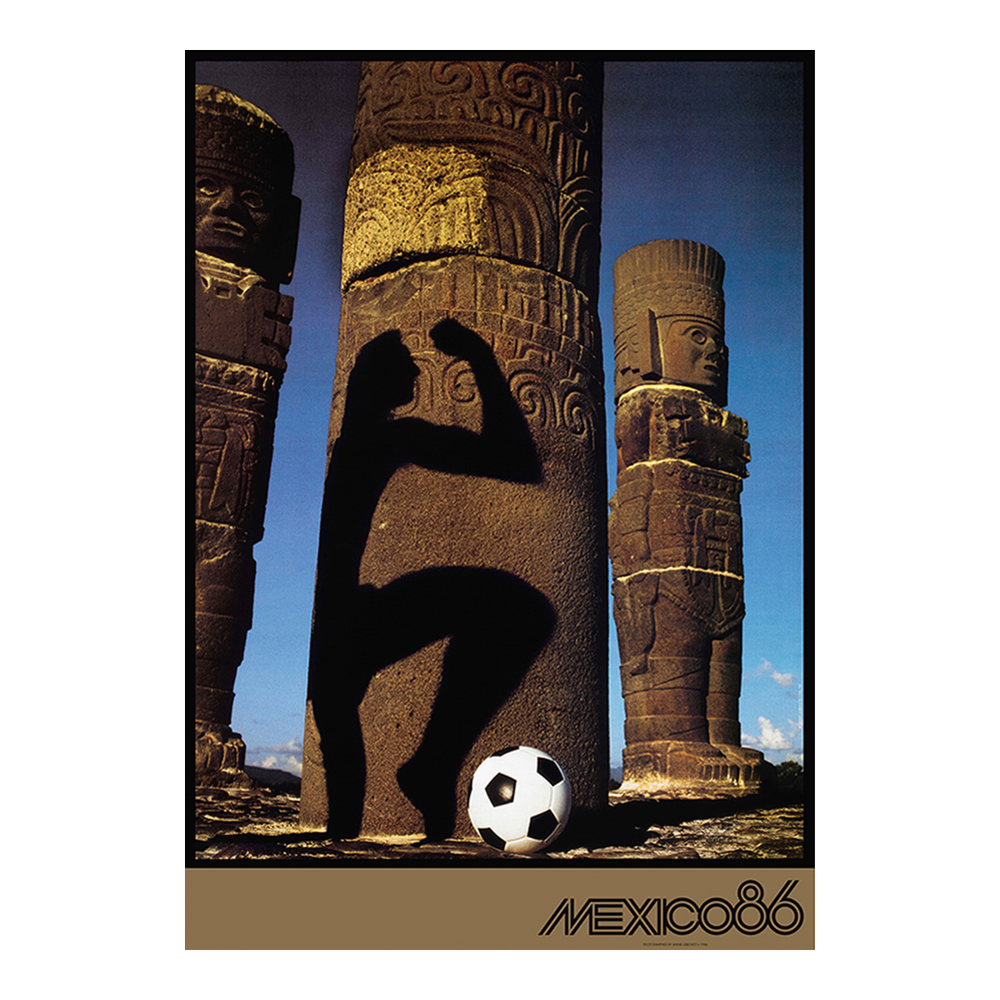

Official Poster
The official 1986 FIFA World Cup poster was designed by the renowned American photographer Annie Leibovitz. It was a landmark design for the tournament, marking the first time a photograph was used as the official World Cup poster rather than a graphic illustration.
The poster features a stark, dramatic use of light and shadow over ancient Aztec or Toltec stonework.
It showcases Mexico's rich pre-Columbian heritage as a central theme. The shadow of a soccer player is seen appearing to kick a ball, effectively bridging Mexico's ancient history with the modern game of football.
Unlike many previous World Cup posters, this design is minimalist and avoids heavy typography, relying instead on high-contrast photography to convey its message.

Annie Leibovitz
Anna-Lou Leibovitz (born October 2, 1949) is an American portrait photographer best known for her portraits, particularly of celebrities, which often feature subjects in intimate settings and poses. Leibovitz's Polaroid photo of John Lennon and Yoko Ono, taken five hours before Lennon's murder, is considered one of Rolling Stone magazine's most famous cover photographs. The Library of Congress declared her a Living Legend, and she is the first woman to have a feature exhibition at Washington's National Portrait Gallery.
Leibovitz was a student in the 1970s when her photos were published for the first time: pictures of Vietnam War protesters in Israel, taken on assignment for Rolling Stone, one of which landed on the cover. Since then, she has captured film stars, politicians, athletes, royalty and artists for features and cover stories in other major publications, including Vanity Fair, Vogue and Time.